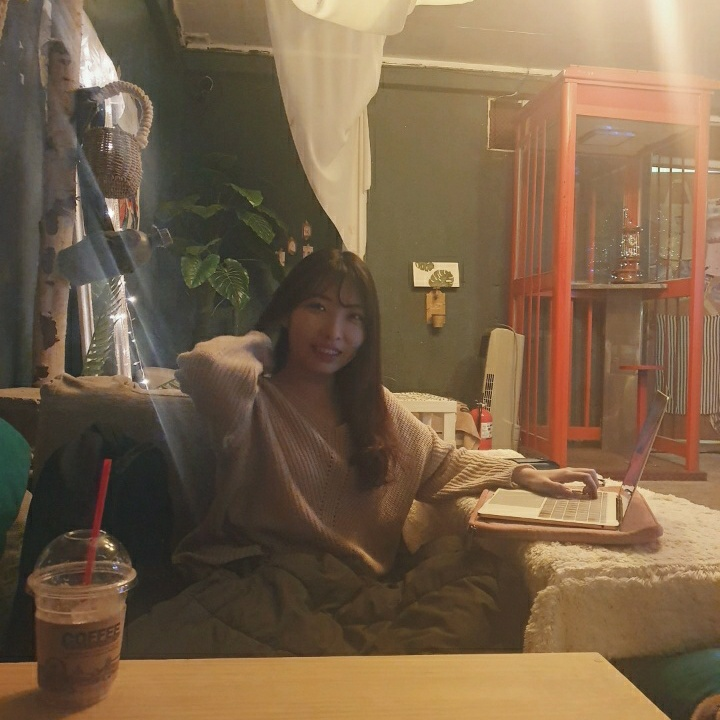
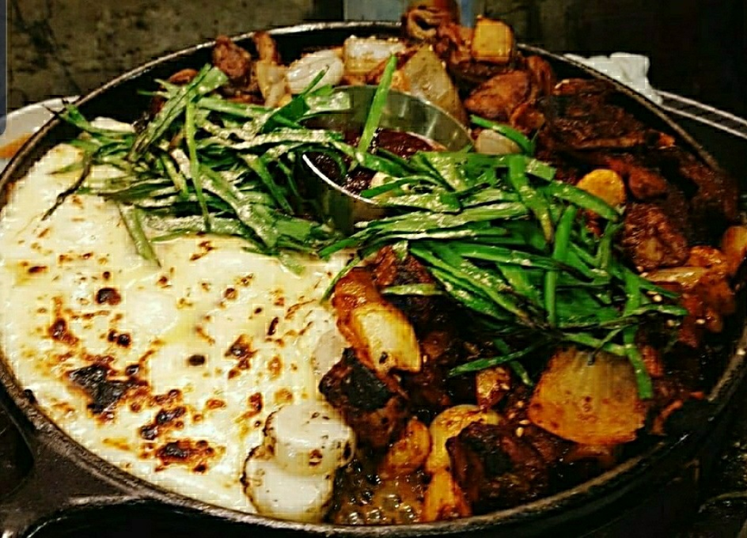

LIKE LION

95.09.16 이상경
프로집순이 & 멋쟁이사자처럼 8기
안녕하세요 심리학과 14학번 이상경입니다.
집콕을 좋아하지만 아주 가끔 밖으로 나가요 월요일 목요일에ㅎㅎ
종암동에 거주하고 있어요. 법후 명물 순대포터 토종순대 먹으러 오세용

FAVORITE
가장 좋아하는 영화는 어바웃타임입니다.
여주인공이 정말정말정말 예뻐요...
스토리도 점말 좋으니까 영화 좋아한다면 꼭 보세요~!!

음식 중에서 치즈곱창을 가장 좋아합니다.
곱창은 왕십리보다는 종로 곱창거리 추천합니다.
위에 사진은 영등포 구공탄곱창 입니다